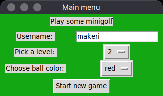
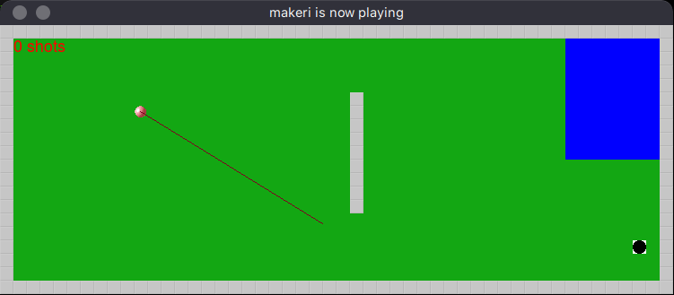

Käyttöohje
Lataa projektin viimeisimmän releasen lähdekoodi itsellesi.
Sen jälkeen siirry komentorivillä projektista löytyvään minigolf-game -kansioon. Suorita kaikki ohjelmaan liittyvät komennot sieltä.
Konfigurointi
Pelien tulokset tallennetaan sqlite-tietokantaan. Voit halutessasi vaihtaa tuon paikallisen tietokantatiedoston nimeä muokkaamalla minigolf-game -kansiosta löytyvää .env -tiedostoa. Jos vaihdat tiedoston nimeä, suosittelen säilyttämään data/ -alkuliitteen nimessä, jolloin tiedosto pysyy data -kansiossa. Oletuksena tiedoston sisältö on seuraavanlainen:
DB=data/db.sqlite
Ohjelman käynnistäminen
Ennen pelin ensimmäistä käynnistystä suorita seuraavat komennot
poetry install
poetry run invoke initialize-db
Näiden komentojen jälkeen pelin voi käynnistää komennolla
poetry run invoke start
Pelin aloittaminen
Peli käynnistyy aloitusvalikkoon:

Pelin aloitus onnistuu syöttämällä nimesi ja painamalla "Start new game" -painiketta.
Pelin pelaaminen
Peliympäristö näyttää seuraavalta:

Jokainen taso on tietenkin uniikki, kuvassa on taso numero 2.
Palloa voi lyödä klikkaamalla hiirellä haluamaasi kohtaa kentällä ja pallo liikkuu hiiren sijainnin suuntaan. Pallon nopeus on riippuvainen klikkauskohdan ja pallon sijainnin etäisyydestä. Mitä kauempaa palloa lyö, sitä nopeammin ja pidemmälle pallo liikkuu.
Jos pallo ajautuu siniseen vesiesteeseen, se palautuu automaattisesti alkuperäiseen lyöntipaikkaan.
Hiekalle ajautuessaan pallo hidastuu. Hiekkaa on kahta erilaista, vaaleammalla hiekalla hidastuminen ei ole yhtä voimakasta kuin tummalla hiekalla.
Kun pallo menee reikään, pelinäkymä sulkeutuu ja aloitusvalikko aktivoituu. Valikosta voi aloittaa suoraan uuden pelin.
Tulosten tarkastelu
Muutaman pelin pelattuaan on hyvä nähdä omaa tuloshistoriaansa. Kaikki tulokset kaikilta kentiltä saa tulostettua terminaaliin komennolla
poetry run invoke print-scores